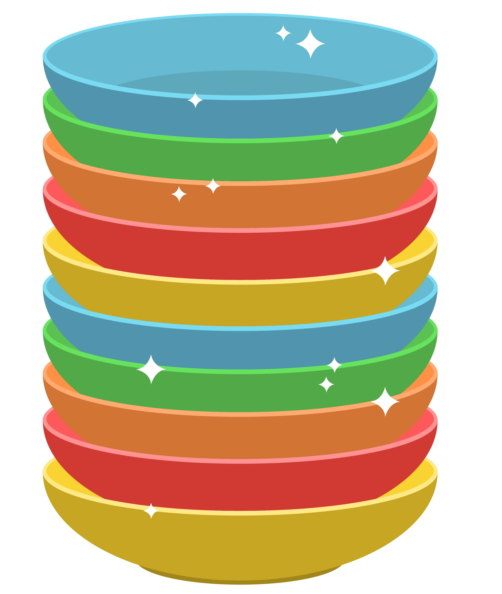
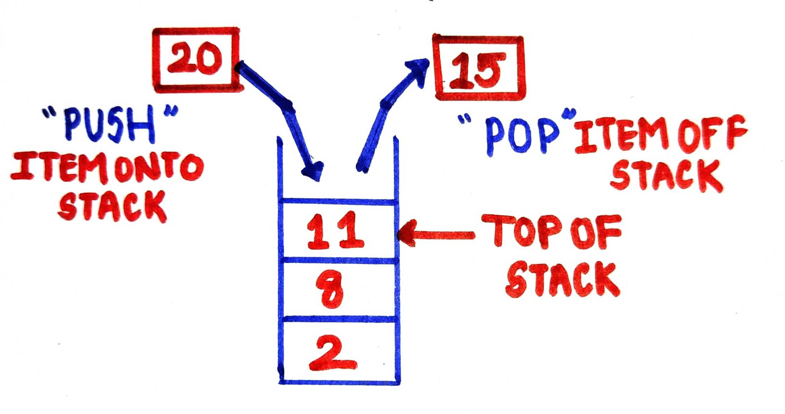
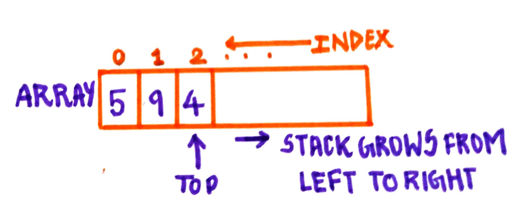
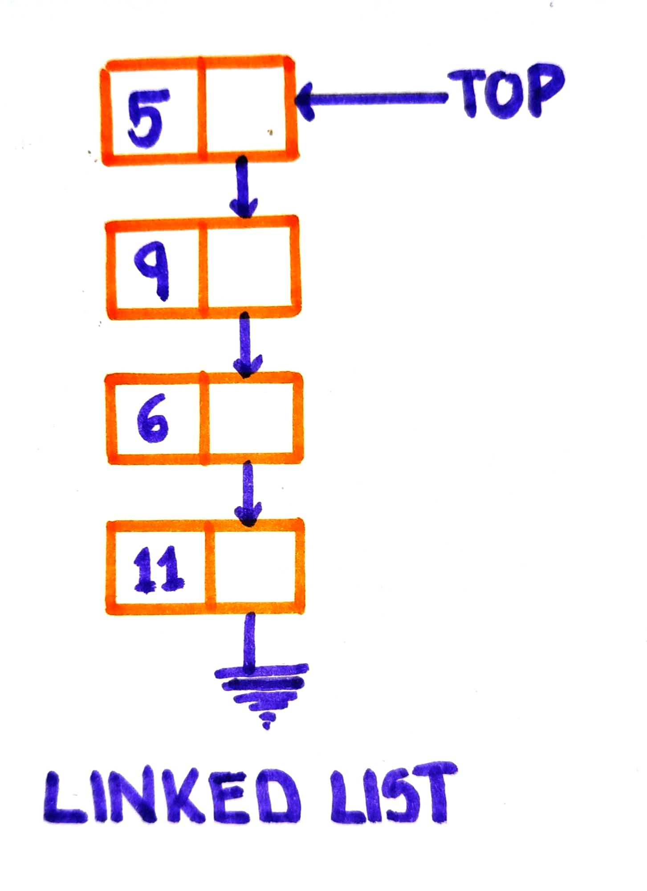

STACK IN DATA STRUCTURES
- Stack is a non-primitive linear data structure where all insertions and deletions are permitted from one end only. When we add elements to the stack it grows at one end and similarly when elements are deleted from stack, it shrinks at the same end.
- Let us Consider an example of books stacked over one another on our teacher's desk. In order to find a particular book we start checking by removing the first book placed at the top of the stack. Therefore, the book which has been placed at the bottommost position by the teacher remains in the stack for the longest period of time. We can say that the bottommost book was the first one to be placed by the teacher and will be the last one to be removed.
- This feature makes it LIFO data structure. LIFO stands for Last-in-first-out.Some real-life examples of stack data structure include stack of books, pile of dishes, stack of discs, deck of cards etc.
Stack of books

Pile of dishes

Stack of discs
Stack Operations
push()– Adding new element onto stack.pop()– Removing top element from stack.top()– To get the top most element of the stack.empty()– To check if the stack is empty or not.full()– To determine if the stack is full or not.

Stack Implementation
Stack can be implemented in two ways :- Static implementation
- Static implementation uses arrays for creating stack. It is considered as a very simple technique. A one-dimensional array can be used to hold all the elements of a stack.A variable "top" is used to keep track of the index of the top most element present in the stack.Initially, top is set to -1 as the stack is empty. After "push" operation top is updated to top+1 this indicates growing of stack. After "pop" operation top is decremented by 1 this indicates the shrinking of stack.When the value of top becomes Size-1 after a series of insertions or push operations, it is said to be full .Now no elements can be pushed onto stack. Similarly, before popping an element from the stack we first check if the stack still contains elements and is not empty.

- Dynamic implementation
- Dynamic implementation is also called linked list representation. Pointers are used for dynamic implementation of stack. It is said to be an efficient way of representing stack as in this technique we can dynamically increase the size of the stack as per the requirement. In this kind of representation we use a singly connected linked list where the head pointer/top pointer keeps track of the top most element in the stack.
- The push operation involves inserting a new node to the linked list. Initially when the Stack (Linked List) is empty, the top pointer will be NULL. After a node is pushed onto the stack the top will now point to this newly created node. The pop operation is similar to deletion of a node from the starting of a linked list. We will first equate a temporary pointer to the top pointer then the top is made to point at the node which was initially inserted before the top most node. Finally, we will delete the node which the temporary pointer is pointing at.
- Remember that deletion and insertion in stack takes place in the last in first out(LIFO) format so the newly inserted element will be the first one to be popped off the stack. Again, before popping an element/node we have to check if the stack is empty or not i.e. if top == NULL, it means that the stack is empty and therefore pop operation cannot be carried out.

Program for implementing stack using an array in C++
#include < iostream > using namespace std; #define SIZE 5 int S[SIZE]; int top = -1; void push(int value) { if(top==SIZE-1) { cout<<"Stack is full!\n"; } else { top++; S[top]=value; } } bool empty() { if(top==-1) return true; else return false; } void pop() { if(empty()) cout<<"Stack is empty!\n"; else cout<<"Element popped from the stack:"<< S[top]; top--; } void stack_top() { if(empty()) cout<<"Stack is empty!\n"; else cout<<"Element at top is: "<< S[top]<<"\n"; } void displayStack() { if(empty()) { cout<<"Stack is empty!\n"; } else { for(int i=0 ; i<=top; i++) cout<< S[i]<<" "; cout<<"\n"; } } int main() { char ch, flag=1;int value; while( flag == 1) { cout<<"\na)PUSH b)POP c)SHOW TOP d)DISPLAY STACK e)EXIT"; cout<<"\n----------------------------------------------"; cout<<"\nYour choice:" ; cin>>ch; switch (ch) { case 'a': cout<<"Enter Value:"; cin>>value; push(value); break; case 'b':pop(); break; case 'c': stack_top(); break; case 'd':displayStack(); break; case 'e': flag = 0; cout<<"-Exit-"; break; default:cout<<"Invalid choice"; } } return 0; }
Output:
a)PUSH b)POP c)SHOW TOP d)DISPLAY STACK e)EXIT
----------------------------------------------
Your choice:a
Enter Value:14
a)PUSH b)POP c)SHOW TOP d)DISPLAY STACK e)EXIT
----------------------------------------------
Your choice:a
Enter Value:21
a)PUSH b)POP c)SHOW TOP d)DISPLAY STACK e)EXIT
----------------------------------------------
Your choice:b
Element popped from the stack:21
a)PUSH b)POP c)SHOW TOP d)DISPLAY STACK e)EXIT
----------------------------------------------
Your choice:a
Enter Value:48
a)PUSH b)POP c)SHOW TOP d)DISPLAY STACK e)EXIT
----------------------------------------------
Your choice:d
14 48
a)PUSH b)POP c)SHOW TOP d)DISPLAY STACK e)EXIT
----------------------------------------------
Your choice:c
Element at top is: 48
a)PUSH b)POP c)SHOW TOP d)DISPLAY STACK e)EXIT
----------------------------------------------
Your choice:e
-Exit-
Drawbacks of using array for implementation of stack:
-We cannot increase the size of the array if we have more elements to insert as array stores only a fixed number of data values which is predefined at the time of declaration by specifying size.
-Considering the above point if we create a very large array, a lot of memory space will be wasted.
Program for implementing stack using linked list in C++
#include < iostream > using namespace std; //Structure of the Node struct Node { int data; Node *link; }; //top pointer to keep track of the top of the stack Node *top = NULL; //Function to determine if stack is empty or not bool isempty() { if(top == NULL) return true; else return false; } //Function to insert an element in stack void push (int value) { Node *ptr = new Node(); ptr->data = value; ptr->link = top; top = ptr; } //Function to pop an element from the stack void pop ( ) { if ( isempty() ) cout<<"Stack is Empty"; else { Node *ptr = top; cout<<"Element popped from the stack:"<data; top = top -> link; delete(ptr); } } //Function to display element at the top of the stack void stack_top() { if ( isempty() ) cout<<"Stack is Empty"; else cout<<"Element at top is : "<< top->data; } // Function to Display the stack void displayStack() { if ( isempty() ) cout<<"Stack is Empty"; else { Node *temp=top; while(temp!=NULL) { cout< data<<" "; temp=temp->link; } cout<<"\n"; } } int main() { char ch, flag=1; int value; while( flag == 1) { cout<<"\na)PUSH b)POP c)SHOW TOP d)DISPLAY STACK e)EXIT"; cout<<"\n----------------------------------------------"; cout<<"\nYour choice:"; cin>>ch; switch (ch) { case 'a': cout<<"Enter Value:"; cin>>value; push(value); break; case 'b':pop(); break; case 'c': stack_top(); break; case 'd':displayStack(); break; case 'e': flag = 0; cout<<"-Exit-"; break; default:cout<<"Invalid choice"; } } return 0; }
Output:
a)PUSH b)POP c)SHOW TOP d)DISPLAY STACK e)EXIT ---------------------------------------------- Your choice:a Enter Value:22 a)PUSH b)POP c)SHOW TOP d)DISPLAY STACK e)EXIT ---------------------------------------------- Your choice:a Enter Value:13 a)PUSH b)POP c)SHOW TOP d)DISPLAY STACK e)EXIT ---------------------------------------------- Your choice:b Element popped from the stack:13 a)PUSH b)POP c)SHOW TOP d)DISPLAY STACK e)EXIT ---------------------------------------------- Your choice:c Element at top is : 22 a)PUSH b)POP c)SHOW TOP d)DISPLAY STACK e)EXIT ---------------------------------------------- Your choice:a Enter Value:32 )PUSH b)POP c)SHOW TOP d)DISPLAY STACK e)EXIT ---------------------------------------------- Your choice:d 32 22 a)PUSH b)POP c)SHOW TOP d)DISPLAY STACK e)EXIT ---------------------------------------------- Your choice:e -Exit-
Applications Of Stack
- Stack is used in expression conversion-
- Infix to postfix
- Infix to prefix
- Prefix to Infix
- Postfix to Infix
- Evaluation of expression
- Simulation of Recursion
- Function call
- Compilers use a stack for parsing the syntax of expressions, program blocks etc.
- Stack is used to implement Tower of Hanoi